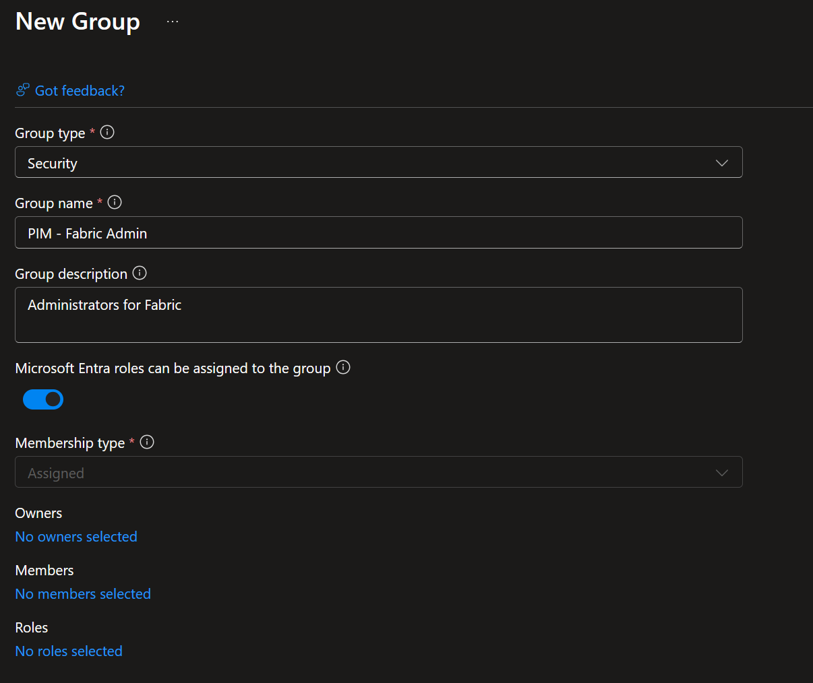
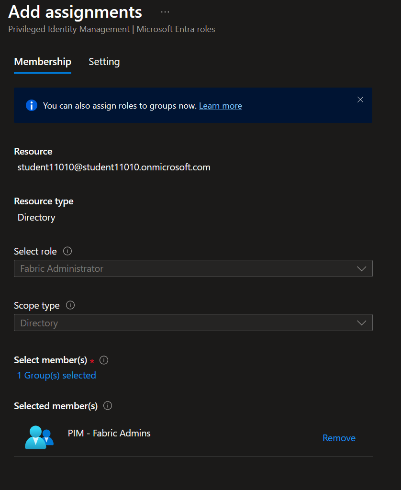
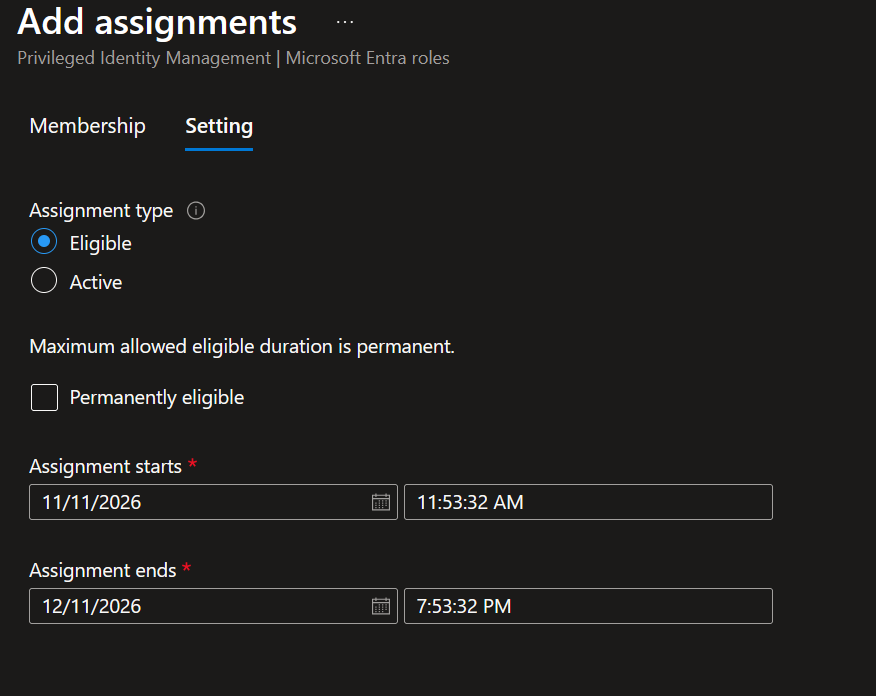
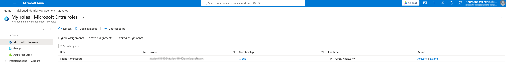

Overview
Privileged Identity Management (PIM) is a Microsoft Entra ID feature that enables organizations to implement just-in-time administrative access. Instead of assigning permanent privileged roles, administrators can activate roles only when needed, reducing the risk of unauthorized access and improving overall security.
Objectives
- Implement Privileged Identity Management (PIM) by assigning privileged roles as eligible rather than permanently active.
Make a PIM group
Creating a role-assignable security group for PIM
In this step I created a new security group in Microsoft Entra ID called “PIM - Fabric Admin”. It will be used to give users the Fabric Administrator role through Privileged Identity Management (PIM). I turned on “Microsoft Entra roles can be assigned to the group” so the group is role-assignable. This setting can only be chosen when the group is created, and it automatically sets the membership type to Assigned, because dynamic groups can’t hold Entra roles. I didn’t add any owners, members or roles here on purpose. The Fabric Administrator role will be assigned to the group through PIM, and users will be added as eligible members. That way nobody has permanent admin rights. Users activate the role only when they need it, for a limited time and with a justification. This follows least privilege and gives a clear audit trail of who had admin access and when.

Add the role to the group
Assigning the Fabric Administrator role to the group with PIM
In this step I opened Privileged Identity Management (PIM) for Microsoft Entra roles and added a new assignment for the Fabric Administrator role. The scope is set to Directory, so the role applies to the whole tenant. As the member, I picked the role-assignable group “PIM - Fabric Admins” that I created in the previous step, not individual users. Assigning the role to a group instead of to individual users makes access easier to manage. Anyone who should have Fabric admin rights is simply added to the group, and removing them from the group removes the role. Because the assignment goes through PIM, it can be set to eligible and time-limited in the next tab (Setting), so no one has permanent admin access. This supports least privilege and gives a clear audit trail.

Set Assignment type and time
Configuring the assignment as eligible and time-limited
In this step I set the assignment type to Eligible instead of Active. This means the members of “PIM - Fabric Admins” do not have the Fabric Administrator role by default. Each member has to activate it in PIM when they need it, and the activation only lasts for a limited time. I also left “Permanently eligible” unchecked, so the eligibility itself has an end date. The assignment starts on 11 November 2026 and expires on 11 December 2026. After that, the group loses access to the role unless the assignment is renewed. Time-limiting access like this keeps admin rights from piling up over time and follows the principle of least privilege and Just-In-Time access.

Result
What worked in the end? Feel free to add a final screenshot.
